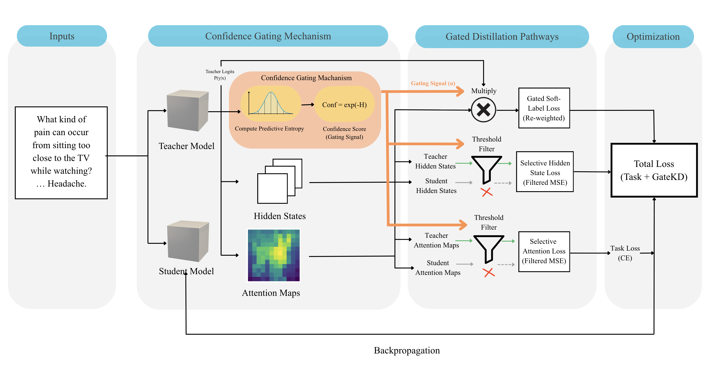
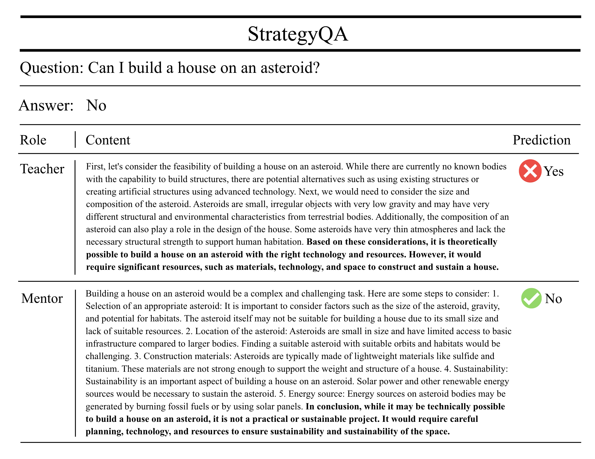
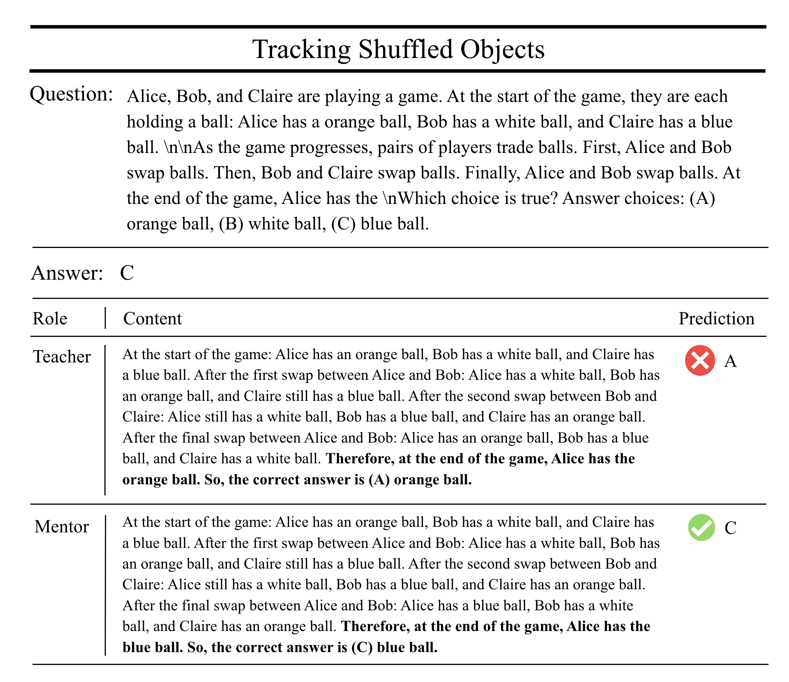
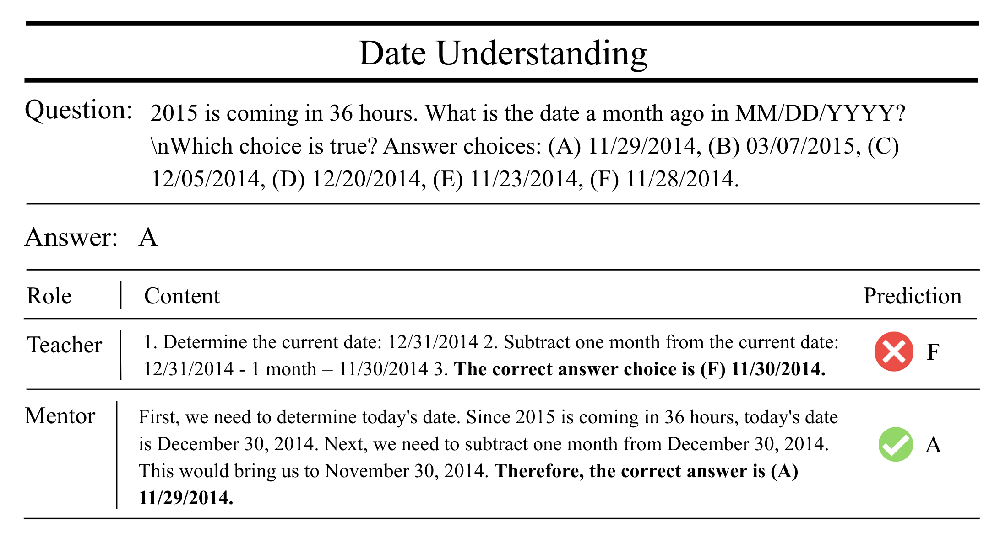
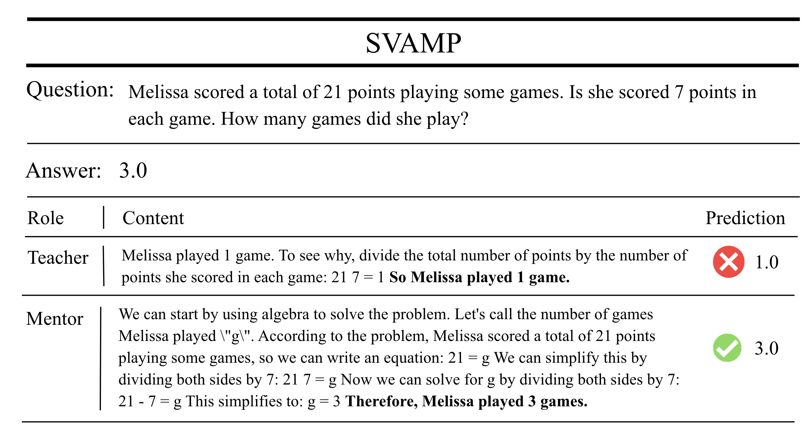

GateKD selectively distills reliable reasoning signals from large language models using confidence-aware closed-loop supervision, reducing hallucination transfer while improving logical and symbolic reasoning in compact student models.
Large gains on shuffled object tracking benchmarks.
Robust improvements under severe capacity constraints.
Reliable reasoning transfer for compact language models.
Existing reasoning distillation methods blindly trust all teacher reasoning trajectories equally. However, even strong LLMs produce hallucinated intermediate reasoning steps, unstable representations, and noisy attention patterns.
GateKD dynamically regulates when and how teacher supervision should be transferred using predictive entropy as a unified reliability signal.

Teacher soft labels are weighted by predictive confidence, suppressing unreliable reasoning supervision.
Intermediate representations are aligned only when teacher reasoning is stable and reliable.
Structural reasoning patterns are distilled selectively through confidence-aware attention alignment.
GateKD consistently outperforms strong open-loop distillation baselines across commonsense, logical, and symbolic reasoning benchmarks.
| Model | Method | CSQA | SQA | Logical | Symbolic |
|---|---|---|---|---|---|
| T5-small | Mentor-KD | 58.6 | 51.8 | 72.9 | 55.2 |
| T5-small | GateKD | 61.3 | 54.6 | 80.8 | 60.1 |
| FlanT5-small | Mentor-KD | 60.4 | 53.7 | 76.4 | 58.1 |
| FlanT5-small | GateKD | 63.2 | 56.1 | 83.7 | 62.5 |
GateKD suppresses speculative and unstable teacher reasoning, enabling students to internalize more grounded and expertise-aligned inference patterns.

GateKD suppresses speculative reasoning trajectories and prioritizes physically grounded inference.

Confidence-aware gating stabilizes intermediate reasoning evolution.

Prevents propagation of early reasoning errors.

Reinforces structured symbolic manipulation skills.
@inproceedings{kao2026gatekd, title = {GateKD: Confidence-Gated Closed-Loop Distillation for Robust Reasoning}, author = {Sermsri, K. and Panboonyuen, T.}, booktitle = {ACL 2026 Workshop TrustNLP Fast Track}, year = {2026} }